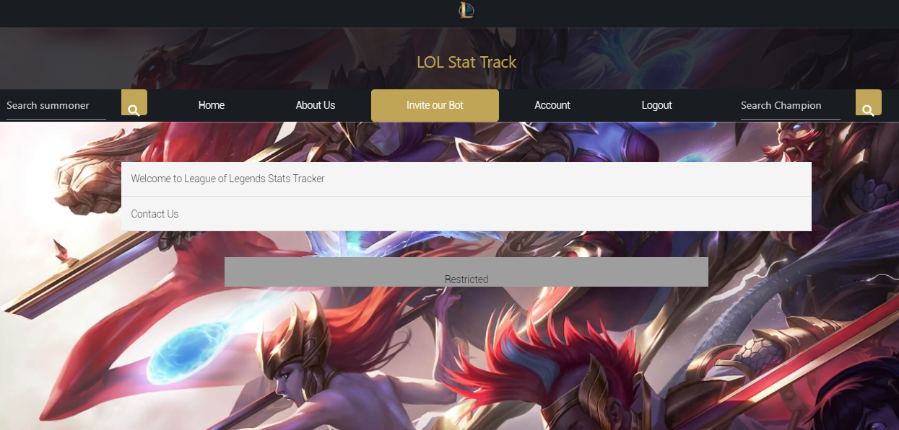
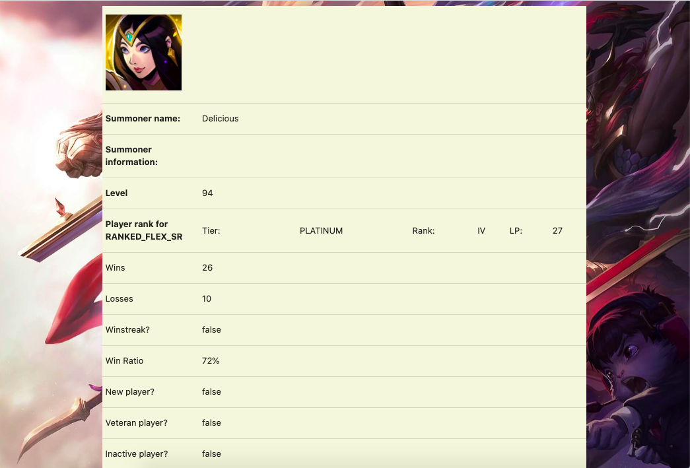
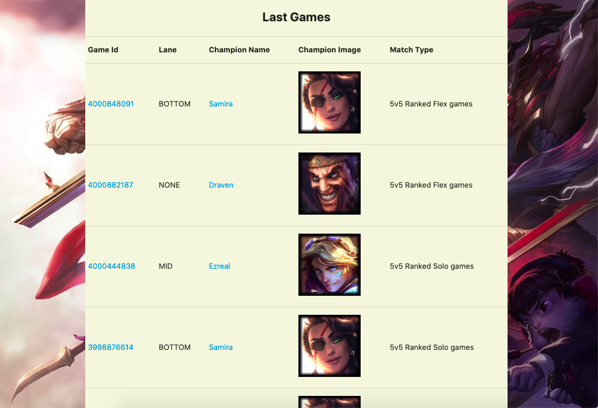
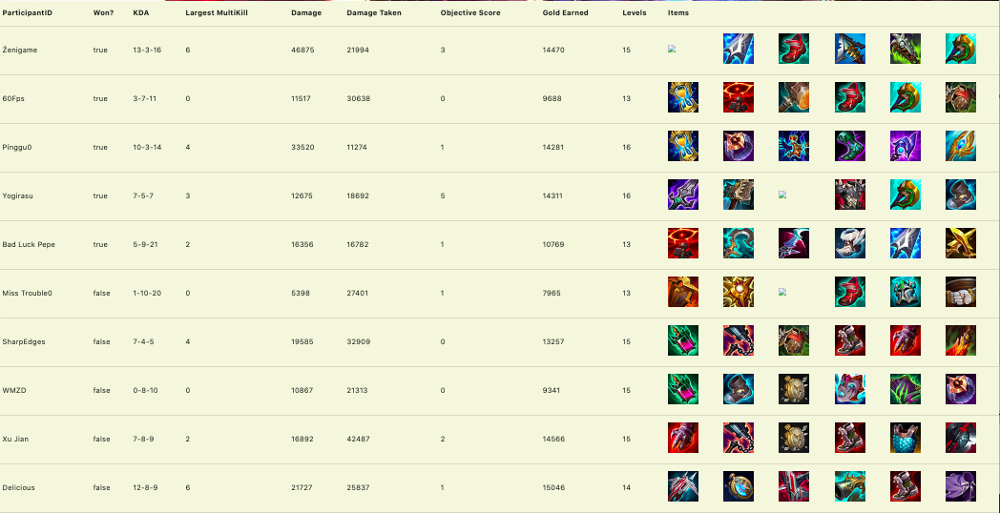
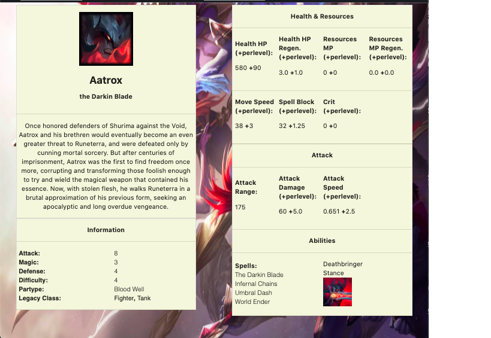

LOL Stat Tracker

• Worked in a group of five members to design and develop a Heroku Java/Spring based application to provide game statistic about the online game League of Legends.
• Implemented the concept of Agile development and User stories to develop a complete application.
• Employed the use of APIs to retrieve data for generic data display and player game data statistic and display.
Languages: Java, JavaScript, CSS, HTML
Login Credentials:
Admin: admin@gmail.com password: admin123
User: test0@gmail.com password: 111111
Note: the API for Summoner search was only approved for a short period of time. The API has since expired, but here are some screenshots showing what the site can display when searching for a Summoner.
Summoner Search example
  Champion Search example:
